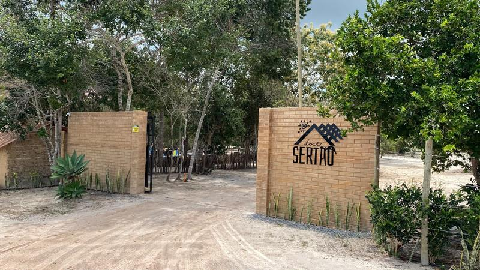
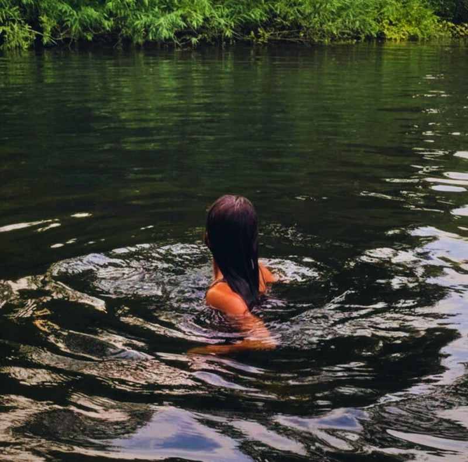
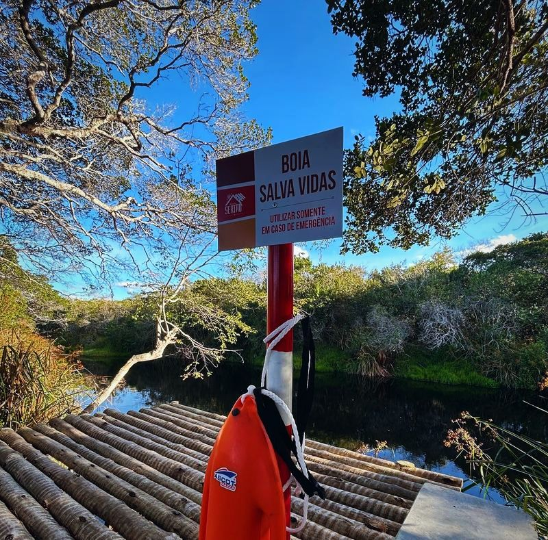
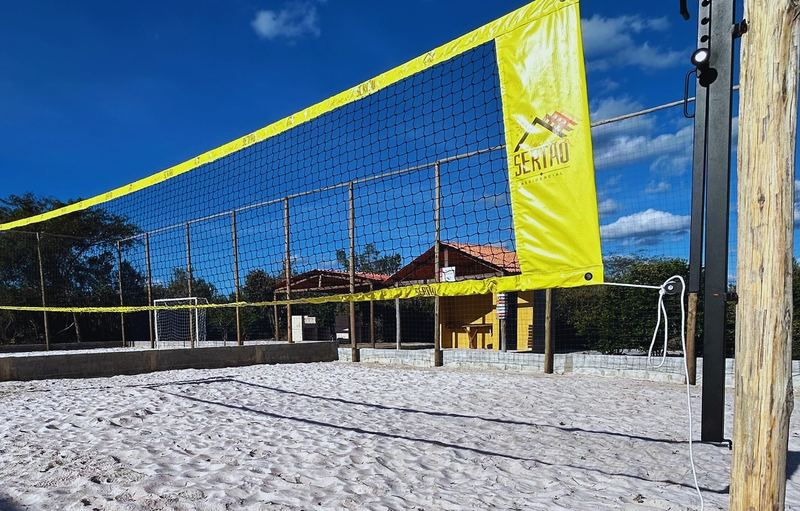
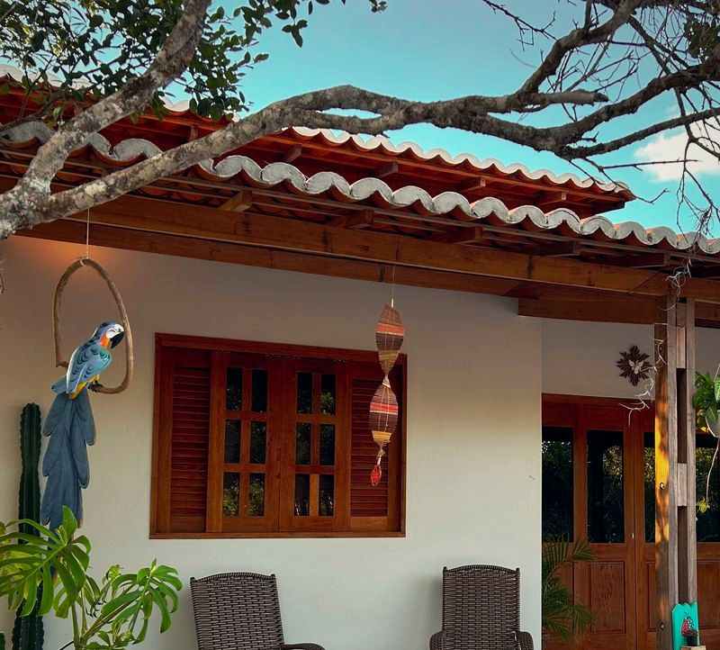
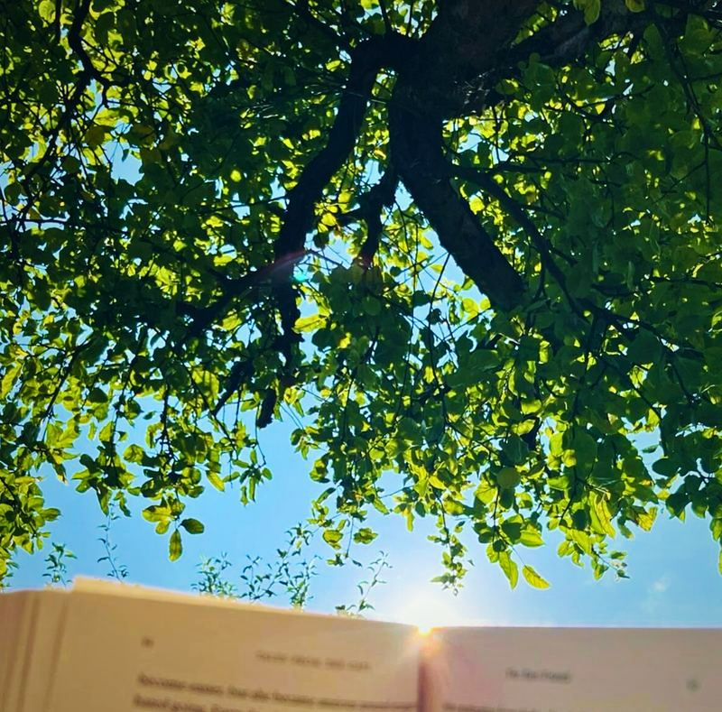

Condomínio rural · Morro do Chapéu (BA)
Doce Sertão Residencial
Um condomínio rural na Chapada Diamantina: adquirir a sua unidade, construir e viver perto da natureza.
Na BA-052, Km 254, a cerca de 15 km do centro de Morro do Chapéu, sentido Salvador, e a cerca de 3 km da Cachoeira do Ferro Doido.
- 937,5 m²
- 1.250 m²
- 1.375 m²
Veja de cima
A região do Residencial e da Fazenda em imagem de satélite. Arraste para passear e aproxime para ver o verde e o rio.
Natureza preservada
São cerca de 156 hectares, com aproximadamente 64% de área preservada — perto de 100 hectares, cerca de 1 milhão de m² de área verde.
O Rio Ferro Doido, perene, com água o ano todo e nascente dentro da propriedade, margeia o empreendimento: são cerca de 1,5 km de rio dentro da área, com faixa de preservação de no mínimo 50 metros.
Os condôminos têm acesso ao rio, com dois decks: banho, contemplação, pesca amadora, caiaque e stand up, sempre respeitando as regras administrativas e ambientais.
Na beira do rio fica a Árvore Mãe, símbolo afetivo do Residencial. Chega-se a ela por uma pequena caminhada no meio da vegetação, e existe a tradição de abraçá-la e fazer um pedido.
As ruas levam nomes de aves catalogadas na região, com placas que mostram o nome e a imagem da ave.



O que já existe
O Residencial já tem moradores e casas em construção — não é só projeto, está entrando em fase de ocupação. A Doce Sertão Construtora está à frente de algumas dessas obras.
- Campo de futebol de areia e quadra de beach tennis, de uso dos condôminos
- Churrasqueiras
- Camping exclusivo dos condôminos
- Dois decks na margem do Rio Ferro Doido e acesso ao rio
- Portaria com câmeras e controle de acesso
- Vias internas com nomes de aves
Previsto Na planta, e ainda não prontos: parquinhos, horta comunitária, espaços para cultivo de flores e outras áreas de convivência.
Infraestrutura da unidade
- Água
- Abastecimento previsto por poço devidamente licenciado. A situação atual da implantação, a equipe confirma pelo WhatsApp.
- Energia
- Cada condômino instala o seu próprio sistema de energia solar.
- Esgoto
- Cada unidade tem o seu próprio sistema, com fossa séptica, conforme as regras técnicas e o Regulamento de Construção.
- Internet
- Hoje cada condômino contrata a sua.
Acesso e segurança
A entrada é pela portaria, junto à Fazenda, com câmeras e controle de acesso: só entram condôminos e pessoas autorizadas.
A Fazenda Doce Sertão, em frente, está em funcionamento: cafeteria, caldo de cana e camping.

Construir na sua unidade
Quem compra já pode iniciar o processo para construir — não precisa esperar toda a infraestrutura ficar pronta.
A obra segue o Regulamento de Construção, com autorização e orientação da administração.
Terreno + construção
A Doce Sertão Construtora executa obras dentro do Residencial: dá para resolver terreno e construção com o mesmo grupo.
Durante a obra, o proprietário recebe acompanhamento quinzenal, com fotos, vídeos, serviços executados e a evolução da construção — ideal para quem mora longe.
Existem condições especiais para quem adquire a unidade e contrata a Construtora, conforme a proposta comercial vigente — fale com a equipe.
Regras de construção atuais
- No máximo dois pavimentos
- Altura máxima de 10 metros
- Afastamento frontal mínimo de 5 metros
- Afastamento mínimo de 1 metro nos fundos e de 1 metro nas laterais
- Recomendação de manter pelo menos 10% da unidade como área verde, arborizada ou jardinada
- Queimadas permanentemente proibidas
- Esgotamento sanitário individual
- Respeito às normas ambientais e de convivência

Venha conhecer
Quer conhecer o Residencial? Agende a sua visita pelo WhatsApp.
- Segunda a quinta
- das 7h às 14h
- Sexta
- das 7h às 15h
- Sábado, domingo e fora desse horário
- só com confirmação da equipe
Atendimento presencial no escritório da área comercial e do Residencial: todos os dias, das 9h às 17h.
Tabela de preços
Entrada + saldo em 12x sem correção, 24x, 36x, 48x ou 60x. O financiamento é feito diretamente com o Doce Sertão, sem precisar de banco.
Valores de referência, sujeitos a alteração — confirme as condições pelo WhatsApp.
| Parcelas | Valor total |
|---|---|
| 12x R$ 3.375,00sem correção | R$ 49.500,00 |
| 24x R$ 1.788,30 | R$ 51.920,03 |
| 36x R$ 1.262,58 | R$ 54.453,73 |
| 48x R$ 1.002,30 | R$ 57.111,07 |
| 60x R$ 848,29 | R$ 59.898,09 |
| Parcelas | Valor total |
|---|---|
| 12x R$ 4.125,00sem correção | R$ 60.500,00 |
| 24x R$ 2.185,52 | R$ 63.452,40 |
| 36x R$ 1.543,02 | R$ 66.548,88 |
| 48x R$ 1.224,93 | R$ 69.796,46 |
| 60x R$ 1.036,71 | R$ 73.202,53 |
| Parcelas | Valor total |
|---|---|
| 12x R$ 4.331,25sem correção | R$ 63.525,00 |
| 24x R$ 2.294,79 | R$ 66.625,02 |
| 36x R$ 1.620,18 | R$ 69.876,32 |
| 48x R$ 1.286,17 | R$ 73.286,29 |
| 60x R$ 1.088,54 | R$ 76.862,66 |
Condições válidas de 24 de setembro de 2026 até 31 de março de 2027. Valores sujeitos a alteração.
Como fechar
Condições, entrada e fechamento: com a nossa equipe, pelo WhatsApp.
Mapa do Residencial
O mapa oficial do Residencial — quadras, áreas de preservação, área comercial, camping, quadras esportivas e portarias — a equipe envia pelo WhatsApp.
Já é proprietário?
Seus boletos e o histórico de pagamentos ficam na Área do Cliente. As parcelas são pagas por boleto bancário, emitido pelo sistema.
No primeiro acesso, clique em “gerar senha” e informe o CPF do titular do contrato; a senha chega no e-mail cadastrado (confira também o spam ou a lixeira).
Não conseguiu entrar mesmo gerando a senha? Fale com a gente pelo WhatsApp (abre em nova aba).
Camping dos condôminos
Proprietários têm um camping exclusivo dentro do Residencial — diferente do Camping Doce Sertão, que é aberto ao público. Agendamento e regras de uso com a administração, pelo WhatsApp.